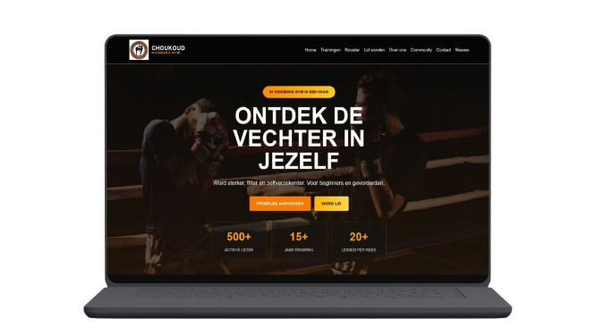

Overview
Choukoud Gym is a community-focused kickboxing gym in The Hague. The existing website felt outdated and made it difficult for new visitors to find information about classes, schedules, and membership options. The goal was to create a modern, welcoming website that helps visitors quickly understand the gym's offering and confidently take the next step towards joining.
Choukoud
Gym...

The challenge
The gym serves a diverse audience, including beginners, experienced athletes, parents, and existing members. Research showed that visitors needed:
- Clear training information
- Easy access to schedules
- A simple membership journey
- More trust and transparency
- A stronger representation of the gym's community values
Research & Strategy
To understand user needs, I conducted:
- Stakeholder analysis
- Competitor research
- Information architecture exercises
- User story mapping
- Usability testing
Research revealed that new visitors primarily wanted to understand training levels, safety, schedules, and how to start with a trial lesson.
Design solution
The final concept, "Your Start in Kickboxing", focuses on guiding visitors from curiosity to action.
Key design decisions included clear navigation structure, strong call-to-actions, simplified content hierarchy, a mobile-first experience and warm orange branding to improve accessibility and approachability.
Reflection & Learnings
Through this project, I strengthened my UX and research skills by translating user needs into design decisions. I learned how important accessibility, content hierarchy and clear user journeys are for first-time visitors. The project also challenged me to balance business goals with user expectations, helping me grow as a more thoughtful designer.
Toolbox
- Figma
- HTML
- CSS
Thanks for taking a closer look at this project.